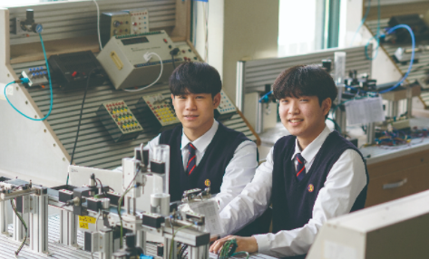

1. 학과 소개
우리사회가 고도산업사회가 될수록 전기에너지의 수요는 증가하게 되고, 이에 따라 전기에너지 관리와 자동화 설비 제어 등
전기에 대한 비중이 증가하게 되어 전기제어과의 전망은 매우 밝다.
또한 우리사회는 4차 산업혁명시대에 접어들면서 전기에너지의 중요성이 더욱더 증대되고 있는 상황에서 학생들의 올바른
인성을 바탕으로 진취적이고 창의적인 전기기술인 양성을 목적으로 하며 전력, 전기설비, 자동화설비 및 이와
관련된 곳의 취업을 목표로 하고 있다.
이처럼 4차 산업혁명시대의 발전에 발맞추어 필요를 충족시키기 위해 전기회로, 전기설비, 전기기기, 자동화설비, 전기CAD,
디지털논리회로, 전기응용 등 미래 지향적인 전문 기술을 습득할 수 있도록 교육과정을 운영하고 있다.
2. 전공 과목
전기회로, 전기설비, 전기기기, 자동화설비, 전기CAD, 디지털논리회로, 전기응용
3. 실습내용
내선공사, 전기기기제작, 자동제어시스템운용, 디지털논리회로, 전기캐드
4. 취득 자격증
전기기능사, 승강기기능사, 정보처리기능사, ITQ사무능력 자격증 등
5. 출처
-
경기기계공업고등학교 홈페이지